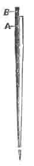
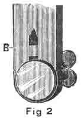
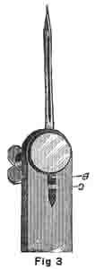
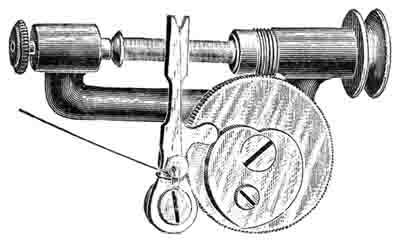
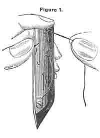
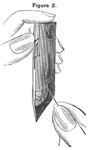

THE NEEDLEBAR
Online Manuals Section
NEW WILLIAMS SEWING MACHINES
INSTRUCTIONS FOR USING THE MACHINE
TO OIL THE MACHINE
(See Cuts on Pages 4, 5 and 6.)
| 1st. - See that Machine is CLEAN, then oil in all the small round HOLES and wherever there is any friction of the working parts. Oil the working parts of the STAND as well as the head of the Machine. Use only the best Sewing Machine Oil. Only a small quantity should be used at a time. |
| 2nd. - The curved side of the RACE against which the Shuttle works should be oiled at least twice a day when the machine is in constant operation. |
| 3rd. - After the Machine has been oiled, run it (with PRESSER-FOOT up and SHUTTLE out) for a minute, and then wipe off the superfluous oil. |
| 4th. - If the oil becomes gummed, causing the Machine to run hard, put a little KEROSENE or ALCOHOL in the OIL-HOLES, run rapidly, wipe clean, and then oil with Sewing Machine Oil. |
|
TO GET THE MOTION
|
| 1st. - Unthread the NEEDLE; remove the SHUTTLE, and raise the PRESSER-FOOT by turning the LIFTER-HANDLE from you. |
| 2nd. - Place the feet on the TREADLE, with the instep directly over the ROD upon which the TREADLE rests. |
| 3rd. - Start the Machine by placing the right hand upon the top of the BALANCE WHEEL and revolving it from you. |
| 4th. - Place a piece of cloth on the FEED and let the PRESSER-FOOT down, and practice starting and stopping the Machine until you can do so with ease. |
|
TO THREAD
THE MACHINE
|
| 1st. - Raise the Needle to the highest point by turning the wheel from you by hand. |
|
2nd. - Place the SPOOL on Spool-pin and pass the thread
into the slot in the Tension Spring, carrying it to the left under the
point of the flat THREAD-GUIDE, and through the hole in the top of the
NEEDLE-BAR. Pass the thread down behind the CHECK LEVER THREAD-GUIDE
(a bent wire near the lower end of the Face-plate), drawing it towards
you between the Guide and the Face-plate. Next pass it over or into
the hook of the CHECK LEVER, after which, push it back from you, between
the THREAD-GUIDE and Face-plate, thence bring it down to the needle,
and pass it through the eye from left to right, leaving about three
inches extending beyond the needle. See Cut, page 4.
|
TO REMOVE THE NEEDLE
Raise the NEEDLE-BAR to its highest point; take hold of the NEEDLE with the thumb and finger of the left hand, and with the right hand loosen the NEEDLE-CLAMP by turning the top of the winged NEEDLE-CLAMP NUT toward you about a turn, not more; then lower the Needle and remove it.
TO SET THE NEEDLE
|

|

|

|
| Now observe the illustration above. Fig. 1 shows the NEEDLE; A is the shank and B the self-adjusting stop. Fig. 2 shows the end of NEEDLE BAR and CLAMP, and just above the | ||
| CLAMP, and in the groove that receives the NEEDLE, is the stop C, against which the end of stop B (Fig.1) rests, as clearly shown in Fig.3. Pass the shank of NEEDLE up into the groove of the NEEDLE-BAR, keeping the shoulder to the right and the long groove to the left. Guide it up until it rests against and covers the stop C (Fig.3), then fasten by turning the top of winged THUMB-NET from you. As the NEEDLE is self-setting, this brings it correctly into place. | ||
TO WIND A BOBBIN
| Examine the Cut on page 4, and the threading will be better understood. |
| 1st. - Oil the cavity in the end of the SPOOLER-SPINDLE and the bearing of the SPOOLER-PULLEY before inserting the BOBBIN. |
| 2nd. - At the end of the Upper Shaft, and to the right of the Balance Wheel, will be found a nut. Turn this nut a little to the left or towards you; this will loosen the Balance Wheel, so that it will turn freely, without running the Machine. |
| 3rd. - Put the BELT into the groove in the PULLEY of the WINDER. |
| 4th. - Place the spool of thread on the spindle on the top of arm of Machine, draw off a few inches of thread, and pass the end of it through the small hole in brass head of Bobbin from the inside. |
| 5th. - With the left hand pull the SPINDLE to the left and insert the BOBBIN, taking care to put the little pin in the socket to the right enters the hole in the end of the BOBBIN. |
| 6th. - Pull the TENSION-PAD towards you until it presses against the Bobbin. |
| 7th. - Take hold of the thread just above the top of the Tension-Pad, pass it into the right hand slot in Pad, then round behind into the left hand slot, then from right to left around the Tension-Screw between the Tension Discs, then again through the left hand slot, then roll up on the Spool any slack thread that may remain between Winder and Spool. |
| 8th. - Start the BALANCE WHEEL from you by hand, and proceed as in sewing. |
| 9th. - When done winding, turn the nut to the right, or from you, to tighten the wheel, and remove the belt from the Winder Pulley. |
(half-page inserted in original manual)
TO WIND THE BOBBIN
|

|
|
New Style Automatic
Bobbin Winder
|
Oil the cavity in the end of the left spindle in which the bobbin turns, the bearings and worm at the right end, loosen the balance wheel by turning the nut towards you which will allow the wheel to turn without the machine running, put the belt into the groove in the pulley of the winder, then run the machine before inserting the bobbin on top of the arm of the machine, draw off a few inches of thread, pass the end of it through the small hole in the brass head of bobbin from the inside. With the left hand pull the spindle to the left and insert the bobbin, with the end that you have the thread inserted in to the left, taking care that the little pin in the driving head enters the hole in the end of the bobbin, pass the thread into the notch in top of the arm of winder, downward and into the notch at the bottom of the arm, then round the back of the tension screw and start slowly to wind the bobbin, holding the free end of the thread for a few revolutions, so as to get the winding properly started. There should be no slack thread left between the spool and the bobbin when you are ready to wind.
TO THREAD THE SHUTTLE
N.B. - Remember the Shuttle is Self-threading.
| 1st. - Hold the SHUTTLE between the thumb and middle finger of the left hand, point down, and spring side towards you. |
| 2nd. - Take the BOBBIN between the thumb and forefinger of the right hand, holding it so that the thread will draw up and over FROM LEFT TO RIGHT. |
| 3rd. - Drop the BOBBIN into the SHUTTLE, and press it gently on the end with the forefinger of the left hand to prevent its turning readily. Draw the thread into the notch at the end of the spring shown in Fig. 1, continue to draw the thread firmly down towards the point of the SHUTTLE, and you will find that it will pass under the different points of the Tension Spring, and finally come into the position shown in Fig. 2. The SHUTTLE is now threaded and ready for use. |
|

|

|
To increase the tension, turn the screw to the right; to decrease it, turn to the left. A very small screw-driver is furnished for this purpose.
To put the SHUTTLE in: Have the CARRIER at one end of the race, and lay the SHUTTLE in the CARRIER, point first, and towards you, the spring side up. Let the end of the thread (about three inches) lie over the SHUTTLE and CARRIER, on your right and close the slide.
TO DRAW UP THE SHUTTLE THREAD
See Cut, page 4 - Position of thumb and Thread.
Take hold of the BALANCE WHEEL, with one hand and the Needle-thread with the other. Let the thread lie slack, so as not to spring the Needle. Move the Wheel from you once round, and pull up the slack of the needle-thread with your hand, in order to draw the Shuttle-thread up through the needle-plate; then take both threads and pass them under the PRESSER-FOOT, towards the back of the Machine. Then close the slide over the SHUTTLE-RACE.
Part One | Part Three | Part Four | Part Five